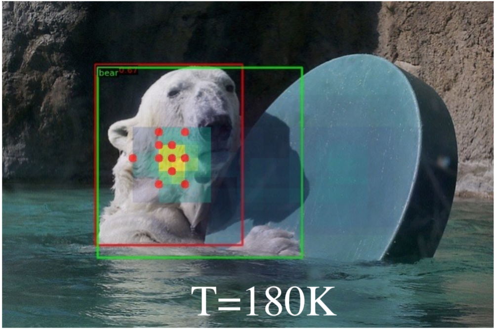
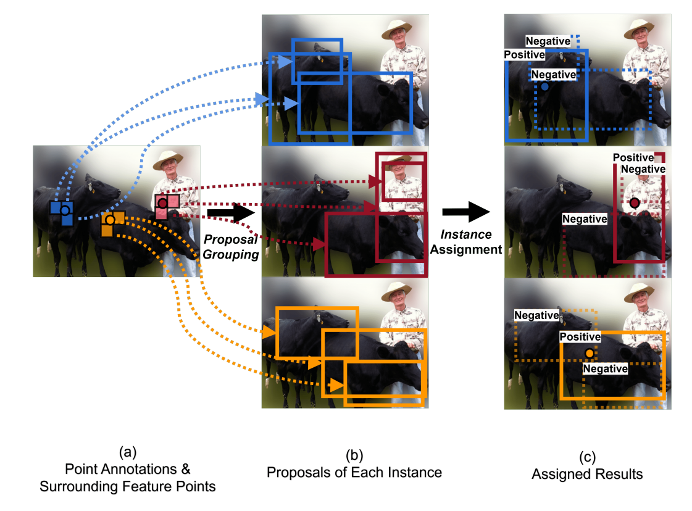
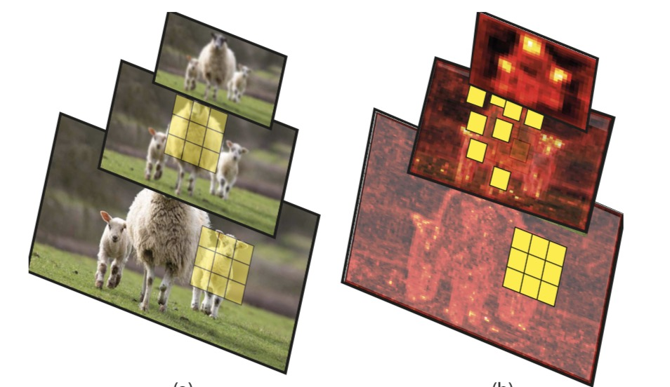

- [2023/3/20] Two papers was accepted by CVPR 2023. DDQ DETR achieve 52.1 AP with R-50 backbone within 12 epochs.
- [2022/3/15] One paper was accepted by CVPR 2022.
- [2021/11/27] We release MMFewShot, an open source few shot learning toolbox based on PyTorch.
- [2021/5/8] One paper was accepted by ICML 2021.
- [2021/5/1] We ranked 4 / 4432 in the Defect-Detection competition of Tianchi.
- [2020/2/24] One paper was accepted by CVPR 2020.
- [2019/8/12] We won the first prize of FLAG-Detection competition in China Artificial Intelligence competition.
- [2019/6/28] Awarded as outstanding graduates by USTC.
- [2019/1/28] Joined SenseTime Research as intern.

|
[1] Dense Distinct Query for End-to-End Object Detection
Shilong Zhang*, Wang xinjiang*, Jiaqi Wang, Jiangmiao Pang, Chengqi Lyu, Wenwei Zhang, Ping Luo, Kai Chen
CVPR2023(* Equal contribution) ,
DDQ-DETR achieves 52.1 AP on MS-COCO dataset within 12 epochs using a ResNet-50 backbone, outperforming all existing detectors in the same setting.
Code has been released at this repo !
|
|

|
[2] Consistent-Teacher: Towards Reducing Inconsistent Pseudo-targets in Semi-supervised Object Detection
Xinjiang Wang*, Xingyi Yang*, Shilong Zhang, Yijiang Li, Litong Feng, Shijie Fang, Chengqi Lyu, Kai Chen, Wayne Zhang
CVPR2023 (* Equal contribution) ,
It
achieves 40.0 mAP with ResNet-50 backbone given only 10% of annotated MS-COCO data, which
surpasses previous baselines using pseudo labels by around 3 mAP. When trained on fully annotated
MS-COCO with additional unlabeled data, the performance further increases to 47.2 mAP.
|
|

|
[2] Group R-CNN for Point-based Weakly Semi-supervised Object Detection
Shilong Zhang*, Zhuoran Yu*, Liyang Liu*, Xinjiang Wang, Aojun Zhou, Kai Chen
CVPR2022 (* Equal contribution) ,
We study the problem of weakly semi-supervised object detection with points (WSSOD-P).
Group R-CNN significantly outperforms the prior method Point DETR by 3.9 mAP with 5% well-labeled images.
Code has been released !
.
|

|
[3] Group Fisher Pruning for Practical Network Compression
Liyang Liu*, Shilong Zhang*,Zhanghui Kuang,Jing-Hao Xue ,Aojun Zhou
ICML2021 (* Equal contribution) ,
We present a general channel pruning framework for complicated structures !
Code has been released !
|
|

|
[4] Scale-equalizing Pyramid Convolution for object detection
Xinjiang Wang*, Shilong Zhang* , Zhuoran Yu, Litong Zhang, Wayne Zhang
CVPR2020 (* Equal contribution),
We proposed a scale-equalizing pyramid convolution method that relaxes the discrepancy between the feature pyramid and the gaussian pyramid.
The module boosts the performance about 3.5 mAP in single-stage object detection with negligible inference time. Code has been released !
|
|
{kind=link}